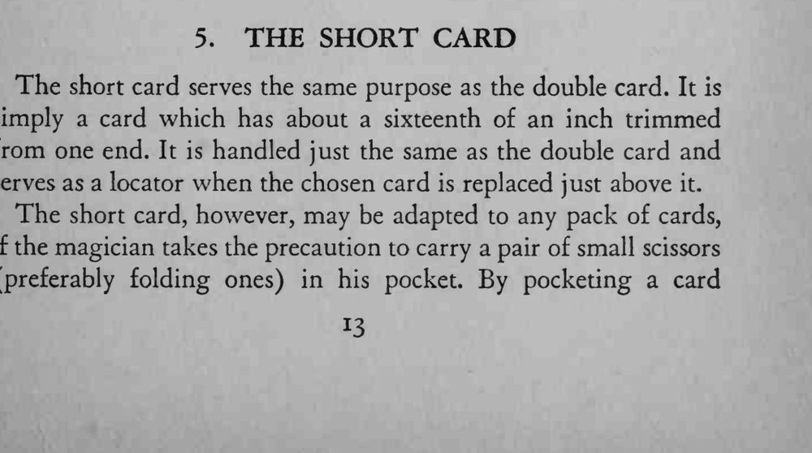
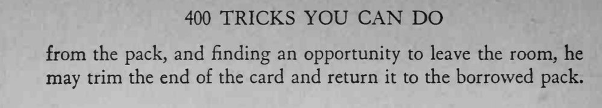

即使借来别人的牌，魔术师照样能准确找出观众放回牌堆的那张选牌。
随身带一把小折剪，才好在借来的牌堆里做出短牌。


The short card serves the same purpose as the double card. It is simply a card which has about a sixteenth of an inch trimmed from one end. It is handled just the same as the double card and serves as a locator when the chosen card is replaced just above it. The short card, however, may be adapted to any pack of cards, if the magician takes the precaution to carry a pair of small scissors (preferably folding ones) in his pocket. By pocketing a card from the pack, and finding an opportunity to leave the room, he may trim the end of the card and return it to the borrowed pack.